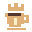

ESTATÍSTICA SEM REVISÃO POR PARES
Placar da cafeína.
O laboratório produz ciência. A gente contabiliza o combustível.

SEU EXPERIMENTO DE HOJE
Já abasteceu o sistema?
Carregando sua permissão…
Ranking de hoje
| Posição / cafeteiro | Hoje | Semana | Acumulado | Média / dia | Litros totais |
|---|
A cafeteira ainda está no aquecimento. Os participantes liberados pelo administrador aparecerão aqui.
Cada xícara vale aproximadamente 150 ml. Semana de segunda a domingo, no horário de Brasília. A média conta todos os dias desde o primeiro registro, inclusive os dias sem café. Desempates: hoje, semana e acumulado; persistindo, ordem alfabética.